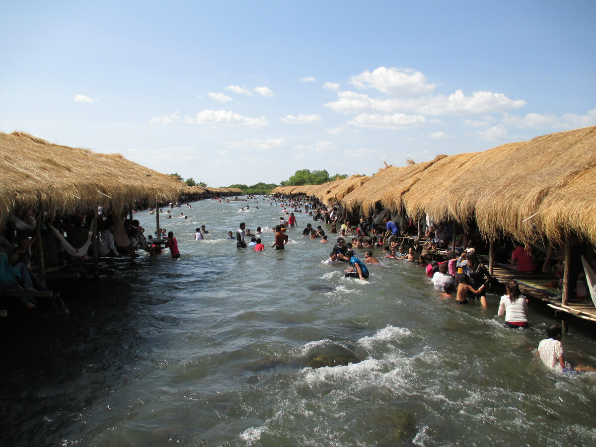

អំពីខេត្តក្រចេះ
ខេត្តក្រចេះ ស្ថិតនៅភាគឦសាននៃប្រទេសកម្ពុជា តាមបណ្តោយទន្លេមេគង្គ។ ខេត្តនេះល្បីល្បាញដោយធម្មជាតិដ៏ស្រស់ស្អាត និងជាជម្រករបស់សត្វផ្សោតអ៊ីរ៉ាវ៉ាឌីដែលកម្រ។
ប្រវត្តិសង្ខេប
ខេត្តក្រចេះមានប្រវត្តិយូរអង្វែង និងធ្លាប់ជាតំបន់ពាណិជ្ជកម្មតាមទន្លេមេគង្គ។ នៅសម័យបុរាណ ខេត្តនេះមានសារៈសំខាន់ក្នុងការតភ្ជាប់ ពាណិជ្ជកម្មរវាងកម្ពុជា និងប្រទេសជិតខាង។
កន្លែងទេសចរណ៍សំខាន់ៗ
- កោះទ្រង់
- ទន្លេមេគង្គ
- ជម្រកសត្វផ្សោតអ៊ីរ៉ាវ៉ាឌី
- វត្តសំបូរ
- សហគមន៍អេកូទេសចរណ៍
ទីតាំងភូមិសាស្ត្រ
ខេត្តក្រចេះស្ថិតនៅភាគឦសាននៃកម្ពុជា មានព្រំប្រទល់ជាប់ខេត្តស្ទឹងត្រែង និងខេត្តមណ្ឌលគិរី ព្រមទាំងជាប់ប្រទេសឡាវ។ តំបន់នេះសម្បូរទៅដោយធនធានធម្មជាតិ និងទន្លេធំៗ។